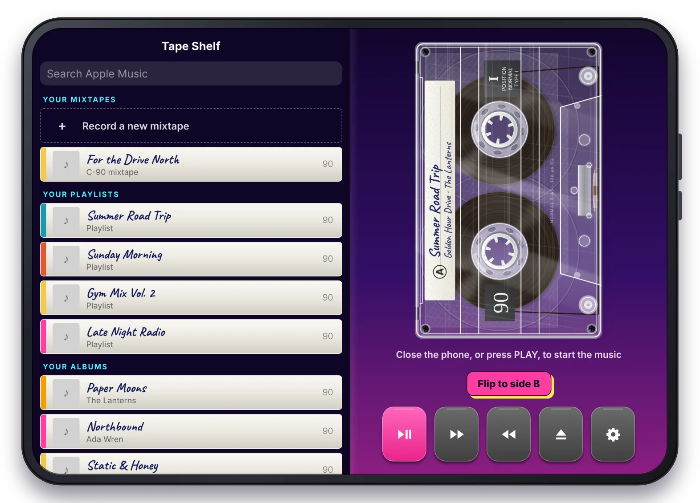
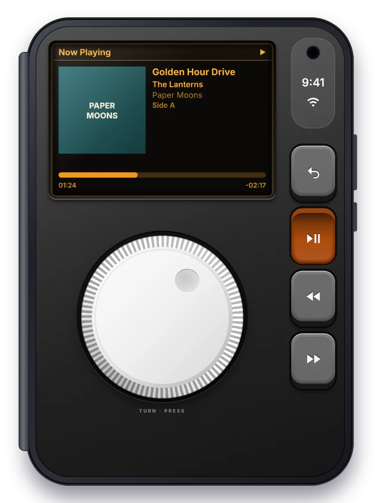

Cassety
Your music, on tape.
Cassety turns your albums and playlists into cassettes. Two sides, reels that turn, keys that clunk. When side A runs out, you flip the tape.
$4.99 one time. For iPhone. Needs an Apple Music subscription.
Cassety turns your albums and playlists into cassettes. Two sides, reels that turn, keys that clunk. When side A runs out, you flip the tape.
$4.99 one time. For iPhone. Needs an Apple Music subscription.
Not a picture of a cassette over a normal player. The tape has a length, two sides and an end.
Every album and playlist is split into side A and side B. When a side runs out the play key pops up, the music stops, and Cassety tells you it is time to turn the tape over.
The reels show how much of the side is left, not just the current song. One empties as the other fills.
Tap fast forward or rewind to skip a song. Hold, and the reels spin up and the tape runs on until you let go.
Play and stop are a pair: press one in and the other pops out. Every key, the door and the fader have their own tap under your thumb, and the fader clicks into its notches.
Key clunks, the door, soft tape hiss and the whir of the motor. The tape runs up to speed when you press play and slows to a stop when you press stop. Turn any of it off if you prefer quiet.
Browse by playlist, artist, album or song, or search all of Apple Music. Open an album to see its songs and start the tape at any one of them.
Every tape is labelled by hand in marker. Albums wear a label in the colours of their cover art.
The first time, Cassety walks you through the deck by having you press each key and flip the tape yourself.
Pick a colour and the whole app follows it: the player, your library and the boombox.

It works on every other iPhone too, where the player fills the screen and the library opens from the music key.
A tape deck in retro 80s, black, yellow or blue, or an MP3 player in retro 80s or black. They all play the same tapes, and the rest of the app takes on the colour you pick.



An iPhone and an Apple Music subscription. Cassety plays music from your Apple Music library and from the Apple Music catalogue.
No. Cassety is a one time purchase of $4.99. There are no adverts and no purchases inside the app. Apple Music is a separate subscription from Apple.
No. There are no accounts, no tracking and no analytics. See the privacy policy.
No. Cassety is designed around the closed and open screens of a folding iPhone, and it works on every other iPhone as well. The boombox is what you get when a folding one is opened.
Not at the moment. Cassety is for iPhone.
No. Cassety uses the iPhone's own playback controls on the Lock Screen.